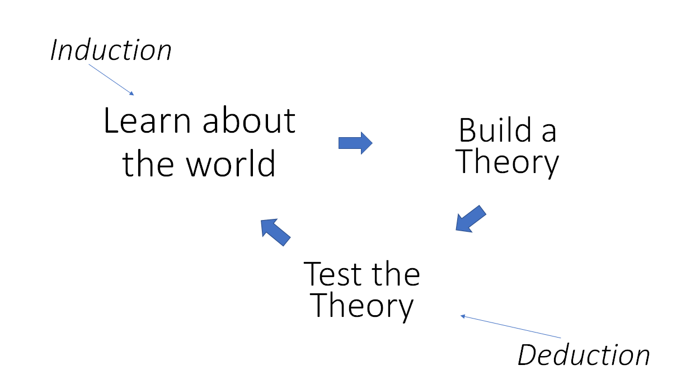

class: center, middle .title[Terrorism and Rebellion] .subtitle[Class 1] .author[Laila Wahedi] .date[January 12, 2017] .footnote[Created with [{Remark.js}](http://remarkjs.com/) using [{Markdown}](https://daringfireball.net/projects/markdown/) + [{MathJax}](https://www.mathjax.org/)] --- class: left # Introductions * Name * Year * Major * Why are you taking the class * What do you want to learned * What are your goals for the class * What do you want to do after you graduate * How will this class help --- class: left # Objectives ### Ask and Answer questions about non-state violence -- 2. Understand the literature as a system -- 3. Determine the next question to ask -- 4. Find the answer -- ### Facts are a consequence. -- ### Show what you know --- class: center # Learning to learn # Get out what you put in *** -- #### Two tracks .left-column[ ### Political Science * Two response papers * Discussant presentations * Research Presentation * Research Paper ] .right-column[ ### Policy * Two op-eds * Discussant presentations * Research Presentation * Policy research Paper ] --- class: left # Expectations ### One Rule: <strong>Mutual Respect</strong> *** -- #### Specifics * Participation * In class * Online * Deadlines * Readings --- class: center, middle # Slack *** ### Sign up if you haven't already --- class: center, middle # Readings Circles --- class: left # What to take away * Explanatory Variable * Dependent Variable * Question * Hypotheses * Answer * How do we know? * Why might it be wrong? * How does the Question fit with what else we know? * Where does it fit in the system of knowledge? ### For Policy, also ask: * What is the problem they are trying to solve? * What is the solution? * What were the alternative solutions tested? * Which was the best solution/ what were the tradeoffs? --- class: center, middle # Studying Violence as Social Scientists --- class: center, middle # What do you want to know about Terrorism and Rebellion? -- How would you find out? --- class: left # Framing a question .left-column[ ### Observations * Fact about the world * *How many deaths from terrorism in 2016* * Not inherently generalizable - Deaths in 2016 != Deaths in 2017 * Not designed around intervention ] -- .right-column[ ### Causal Questions * Relationship in the world * X *causes* Y * *What is the effect of democracy on terrorist incidents* * Predictive, generalizable within assumptions * Can be designed around intervention ] --- class: left # Inductive vs Deductive -- .left-column[ ### Inductive: * "What is ___?" * Build a theory, find the question * Describe an example from the world ] .right-column[ ### Deductive * "Is this ___?" * Tests a theory * Generalizes ] -- ***  --- class: left # Scientific Method ## Falsify hypotheses * How would I know if I was wrong? ## Empirical Implications of Theoretical Models (EITM) * What are all the things that would have to be true for my model of the world to be true? * Can I falsify *any* of them? --- class: left # Confidence: Complete certainty is impossible, how do you quantify it? .left-column[ ### <u>Frequentist:</u> Probability that these data would be observed if my theory were true ### <u>Bayesian:</u> Probability that the theory is correct given the observed data ] .right-column[ <img src="http://imgs.xkcd.com/comics/seashell.png"> ] --- class: center # Bayesian Updating <img style="width:50%" src="http://imgs.xkcd.com/comics/frequentists_vs_bayesians.png"> --- class: center, middle # KKV: What did you take away? --- class: left #KKV: Takeaways ### Qualitative vs Quantitative Research ### Inference, openness, certainty, and method * Inference: facts to understanding, descriptive or causal, constrained to domain * Openness: Don't just take my word for it * Certainty: estimate it * Method: There are rules to good science ### Complexity * Classes, counterfactuals, eitm ### Choosing a question * important to world and literature --- # KKV: Takeaways ### Theory * Consistent with previous evidence, falsifiable, observable implications, concrete ### Post-hoc theory * DANGER! * Okay to apply more generally or to ### Validity, Reliability * Is what your measuring what you think it is ### Replicability ### Leverage * Observable implications, better data, better analysis --- class: center, middle # What is Substate Violence --- class: center, middle # Why define it? --- class: center, middle # What is a state? -- *** ### Territory governed by an entity with a monopoly over legitimate violence --- class: center # Definition Questions ##What is legitimate vs illigitimate violence? ## When is violence organized? --- # Violence in a System ## Stable Unit Treatment Violations (SUTVA) * Assume that the treatment of one actor does not affect other actors * In reality, groups interact * Examples? -- Allies, friends, rivals, military priorities, trade, learning, sponsors --- class: center # Show Me a Figure -- <img style="width:50%" src="../figures/qqb.png"> Here is a figure. -- To delay the presentation of an item, like we're doing here, you put a line containing **only** two hypens '--' followed by an empty line. --- class: center ## Can I Do Animations? <video preload="auto" width="70%" height="auto" data-setup="{}" autoplay loop controls><source src="../videos/vortexmovie.mp4" type="video/mp4" /></video> Yes, those are extremely easy. --- class: left ## How About Some Gnarly Equations? I'm glad you asked. With a link to the MathJax Javascript library, you can write inline equations `\(E=mc^2\)`, or full-line equations like: `$$\Gamma(t)= \pi \, \Im\left\{ \mathbf{x}_+^H(t) \, \frac{\mathrm{d}}{\mathrm{d} t}\mathbf{x}_+(t)\right\}$$` You can just write in LaTeX, with minor modifications for specifying in-line or full-line equations. Also, in Remark, the equations are surrounded by backquotes, as you see in the source. [{MathJax}](https://www.mathjax.org/) lets you write your equations in other ways; see the documentation for details. Note that writing equations in MathJax impacts the portability of your talk. Currently, this template links to a local copy of Remark, but a remote (online) copy of MathJax. If you want the equations to work when you are offline, you need to copy the entire MathJax project, about 150 Mb. See the comments at the bottom of this file. --- class: left ## What is Liminal? Almost nothing, hence the name. It is a minimal theme for Remark for scientific presentations. It is just this file together with the accompanying directory structure. I added the following: * Markup for a title slide * Choice of font and a black-and-gray color scheme * Markup for references .cite[See Moriarty (1888) and Adler, Holmes, and Watson (1891)] * A fade in/out transition that I found on the web * Some comments of things I learned in making it work In Liminal the text is monochromatic, apart from for the references, to show off your colorful figures. Curly braces indicate links, like this one to my [{home page}](http://www.jmlilly.net). I just think it looks cool. Of course you can change the styling very easily. I was just going to use this for own work, but several people have asked me about it, so I decided to make the template available. --- class: middle, center # That's All! To get started, [{download}](http://www.jmlilly.net/liminal.zip) this template. For more information see the Remark [{web site}](http://remarkjs.com/) or [{wiki}]( https://github.com/gnab/remark/wiki). Also, we are on the bleeding edge here, so beware of things like cross-browser compatibility. Don't just assume it is going to look great when you give your talk on another computer—check first. Have fun!